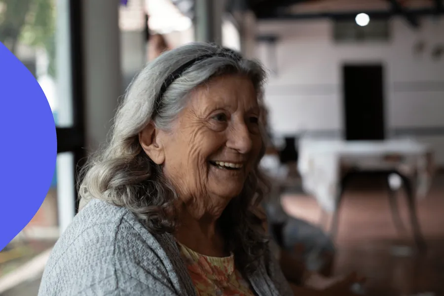
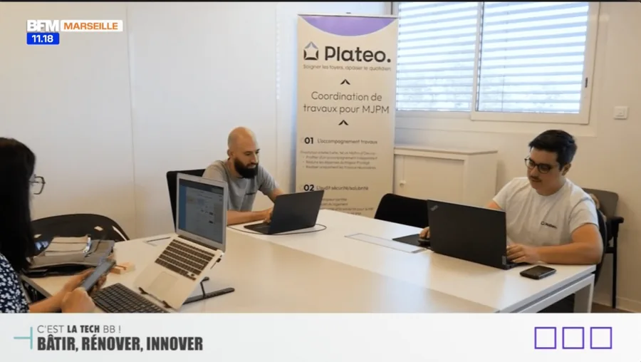
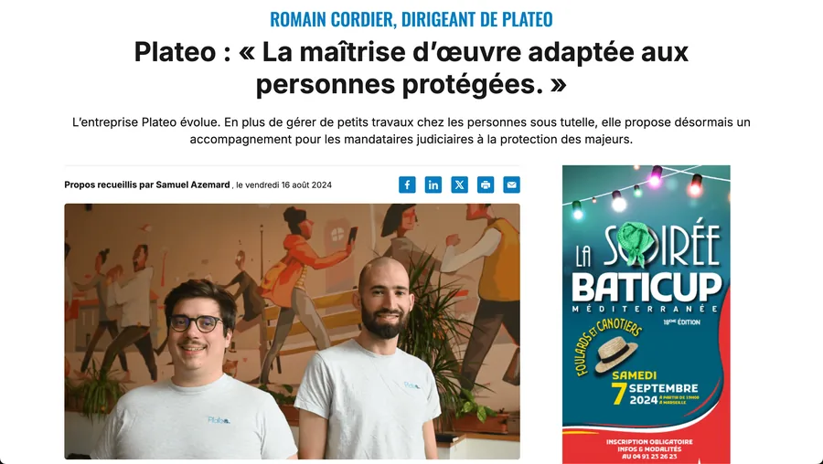
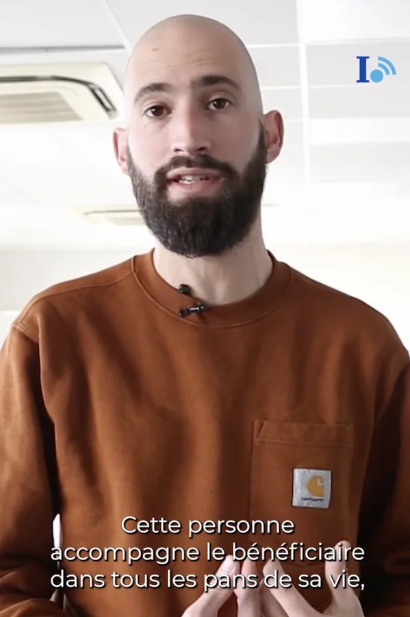
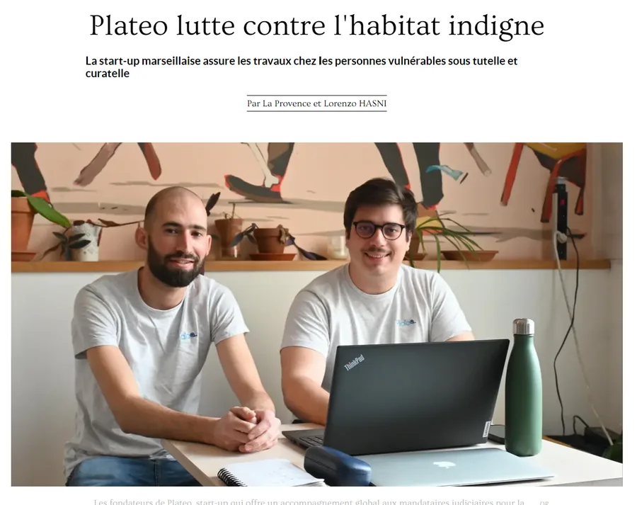
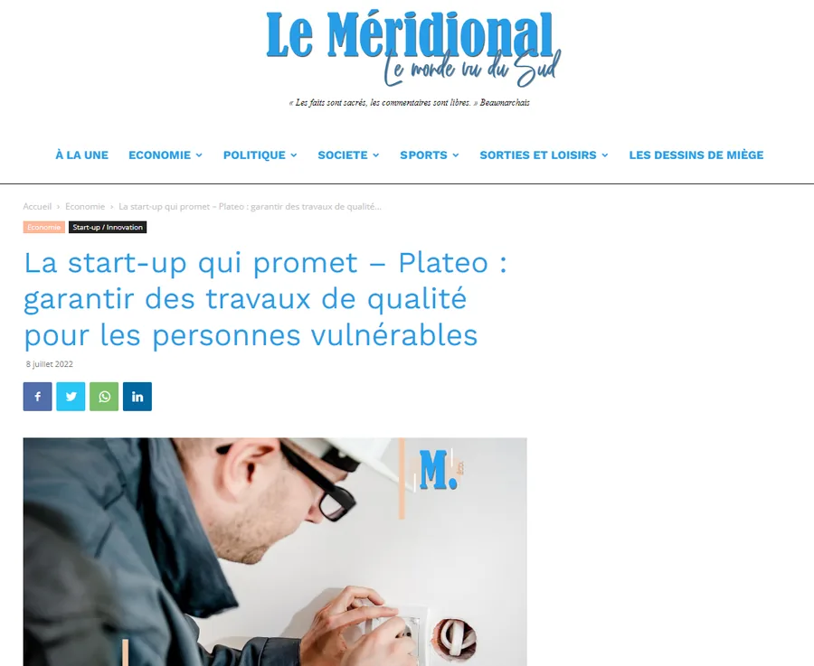

Coordination de travaux pour MJPM
Les travaux chez les Majeurs Protégés, en toute sérénité
Service de coordination de travaux pour les MJPM (tuteurs et curateurs) : de A à Z, de la réception du besoin jusqu'à l'intervention.
- 90+ artisans partenaires
- 800+ interventions en 2025
- 400+ bénéficiaires en 2025
Dédié aux MJPM
Présent auprès des acteurs de la protection des majeurs
MJPM indépendants
Préposés d'établissements
Pour être accompagné pour réaliser des travaux
Accompagnement Travaux et Audit Sécurité / Salubrité

L'Accompagnement Travaux
Rénovation énergétique, remise en état en fin de bail ou entre 2 locataires, adaptation du logement…
Tel un maître d'œuvre, un accompagnement indépendant pour réduire les dépenses du Majeur Protégé. Pour être sûr de réaliser uniquement les travaux nécessaires.
🇫🇷 Disponible sur toute la France

L'Audit Sécurité / Salubrité
Un audit du logement pour vérifier uniquement la sécurité et la salubrité. Pour maîtriser la situation et protéger la responsabilité du MJPM.
Selon une procédure de diagnostic spécifiquement établie pour les logements des Majeurs Protégés.
🇫🇷 Disponible sur toute la France
Pour réaliser des travaux
Dépannages et travaux sur devis
Les dépannages courants
Robinet qui fuit, WC bouché, problème électrique, serrure à remplacer, ouverture de porte, etc.
Nous proposons des prix forfaitaires.
Disponible sur certains départements
Les travaux sur devis
Rénovation, remise en état, adaptation de la salle de bains, jardin, peinture…
Nous proposons des travaux dans toutes les spécialités.
Disponible sur certains départements
Corps d'états
Dans toutes les spécialités
Espaces extérieurs
Entretien des espaces verts, débroussaillage obligatoire, élagage, pose de clôtures, remise en état de jardins…
Lire plus →Adaptation des logements
Rénovation de salle de bains, installation de barres de maintien, sécurisation de la plaque de cuisson, installation de mains courantes…
Lire plus →Dépannages
Électricité, plomberie, chauffage, serrurerie, eau chaude, WC bouchés…
Lire plus →Nettoyage et désinsectisation
Nettoyage Diogène, traitement des nuisibles (punaises de lit, cafards, rats…), tri des effets personnels, déménagement…
Lire plus →Remise en état
Rénovation pour mise en location, en fin de bail, avant vente, après un dégât des eaux, entre 2 locataires, mise en conformité électrique…
Lire plus →Tous les travaux courants
Plomberie, électricité, peinture, maçonnerie, toiture, sol, fenêtres, volets, climatisation, chauffage, isolation, montage de meubles…
Lire plus →Dernières réalisations
Ils nous font confiance pour ces types de travaux
Presse
Ils parlent de nous
Podcast
Au secours mes parents vieillissent
Écouter →
Vidéo
BFM Marseille
Regarder →Vidéo
B Smart
Regarder →Article
La Provence
Lire →
Article
TPBM / MesInfos
Lire →
Vidéo
Initiatives
Regarder →Vidéo
Storm Media
Regarder →
Article
La Provence
Lire →
Article
Le Méridional
Lire →Article
Les Nouvelles Publications
Lire →Vidéo
Demain en Solutions
Regarder →Podcast
France Bleu Provence
Écouter →Podcast
Soyez Audacieux
Écouter →Notre équipe
Une équipe qualifiée et complémentaire

Romain Cordier
Président
Expériences :
- Ingénieur génie civil – Polytech Marseille
- Maître d'œuvre – Bureau d'études tous corps d'état

Raphaël Wieruszewski
Directeur technique
Expériences :
- Ingénieur génie civil – Polytech Marseille
- Maître d'œuvre – Bureaux d'études tous corps d'état

Elise Boureau
Coordinatrice des opérations
Expériences :
- CAP Ébéniste d'art
- Responsable de magasin – Matériaux de construction
Nos partenaires
En chiffres
Avec Plateo, les travaux n'ont jamais été aussi simples
- Artisans partenaires
- 90+
- Interventions en 2025
- 800+
- Bénéficiaires en 2025
- 400+
- Zone desservie
- France
« Soigner les foyers, apaiser le quotidien »
Basée à Marseille, Plateo coordonne les travaux chez les majeurs protégés pour le compte des MJPM (tuteurs et curateurs), partout en France, avec un réseau de plus de 90 artisans partenaires.
Plateo aspire à transformer les espaces de vie des majeurs protégés et à adoucir leur quotidien, avec des services de travaux et de rénovation marqués par la bienveillance, l'exigence et un engagement constant envers la transparence et l'éthique.
En savoir plus sur notre équipe et nos valeursIls nous accompagnent
Le média
Nos derniers articles
Questions fréquentes
Vos questions sur Plateo
Les réponses aux questions que nous posent le plus souvent les MJPM. Une autre question ? Contactez-nous.
Qu'est-ce que Plateo ?
Plateo est un service de coordination de travaux pour les Mandataires Judiciaires à la Protection des Majeurs (MJPM) : associations tutélaires, MJPM indépendants et préposés d'établissements.
Basée à Marseille, Plateo prend en charge les travaux chez les Majeurs Protégés de A à Z, de la réception du besoin jusqu'à l'intervention.
Dans quelles zones intervenez-vous ?
L'Accompagnement Travaux et l'Audit Sécurité / Salubrité sont disponibles partout en France, grâce à des partenaires locaux qui suivent la même procédure.
Les dépannages et les travaux sur devis sont proposés dans certains départements : contactez-nous pour vérifier votre secteur.
Quelle différence avec faire appel directement à des artisans ?
Plateo étudie et coordonne les travaux, les artisans les réalisent : ce n'est pas le même métier.
Vous sollicitez un interlocuteur unique, qui traite chaque demande avec une attention particulière.
Vous recevez une analyse et des devis comparables, qui permettent au MJPM de rester maître de chaque situation.
Pourquoi faire un Accompagnement Travaux ?
Pour les projets d'ampleur ou complexes, l'Accompagnement Travaux apporte un regard indépendant pour ne réaliser que les travaux nécessaires et réduire les dépenses du Majeur Protégé.
Il comprend une visite sur place et une liste de travaux détaillée, puis, en option, la consultation des entreprises, le suivi du chantier et la réception des travaux.
Pourquoi faire un Audit Sécurité / Salubrité ?
L'audit vérifie uniquement les points essentiels de sécurité (gaz, électricité, détecteurs) et de salubrité du logement. Il protège la responsabilité du MJPM et fournit une attestation, ainsi qu'un plan de travaux si des non-conformités sont relevées.
Comment faire une demande de travaux ?
Remplissez le formulaire de demande en ligne en quelques minutes, ou contactez-nous par e-mail à contact@plateo.fr ou par téléphone au 07 78 24 27 75. Nous revenons vers vous pour organiser la suite.
Gagnez du temps : confiez-nous les travaux chez vos bénéficiaires
- Accompagnement Travaux
- Audit Sécurité / Salubrité
- Dépannages
- Travaux sur devis